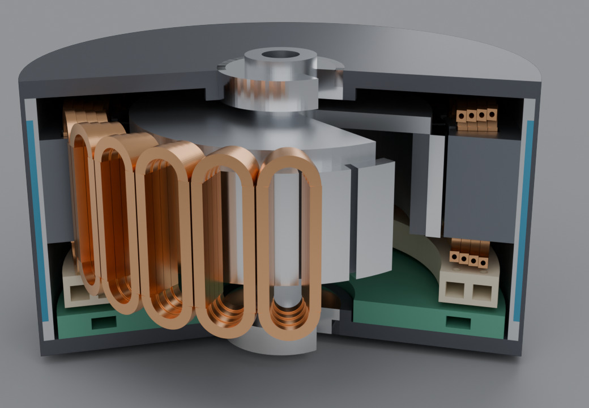
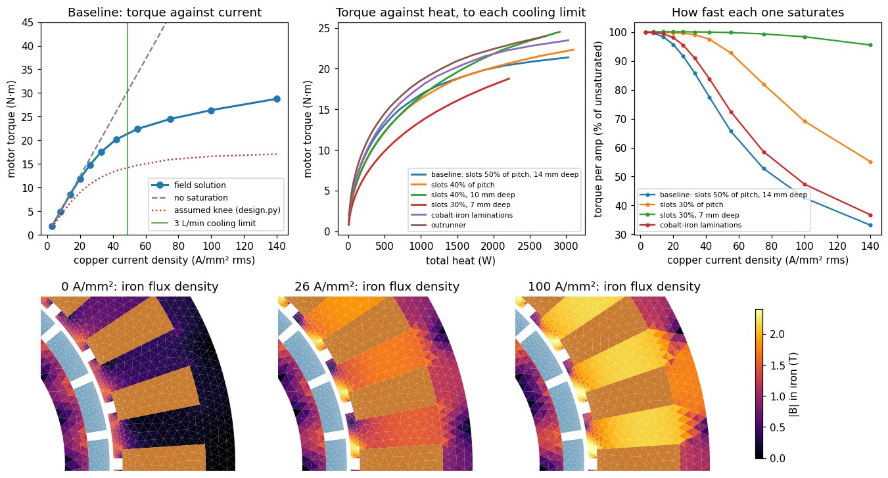
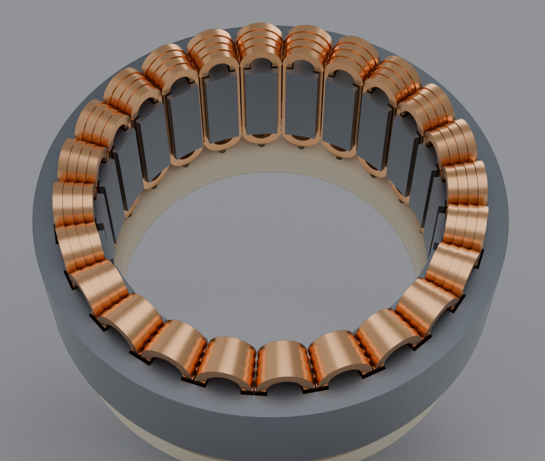

The idea: motor drives have become good at very high current, so what limits a robot joint motor now is heat. If the heat is taken out actively, the copper can be run much harder, the motor makes more torque directly, and the joint needs less gear reduction. Less gearing means a joint that is easier to backdrive and has less reflected inertia.
We designed a motor around that idea and tested it in simulation: a sizing model, a magnetic field solution, and a CAD assembly, all driven by one set of parameters. The idea mostly holds. It also has a price, and a much simpler version gets most of the way. Nothing here has been built.

The design
- Hollow copper conductors. Coolant flows through the bore of every turn, so heat leaves from inside the copper. In an ordinary motor it has to cross wire insulation, a slot liner, the iron and the housing first.
- The drive on the motor, on the same coolant loop.
- An outer jacket fed with the coldest coolant. The flow goes radiator, drive, jacket, then the conductor bores. The outside of the motor stays near the coolant's return temperature whatever the copper is doing.
- Dielectric oil as the coolant, because it touches live copper.
The size is Ø120 mm, the diameter of a RobStride RS04, a common robot joint actuator. That gives a known baseline: 35 N·m continuous and 120 N·m peak, through a 9:1 gearbox.
01 / The first model was wrong in an instructive way
The first pass was a sizing model: copper loss, flow and pressure in the bores, heat transfer to the coolant, drive losses. It needed one number it couldn't compute, the current at which the iron saturates and extra current stops adding torque. We assumed a typical value.
With that assumption, the answer was discouraging. The cooling could carry 6.5 times the current the iron could use. Heat wasn't the limit at all; the iron was, and the spare cooling was wasted.
So we solved the field instead of assuming it. A nonlinear 2-D magnetic solution of the same cross-section, with a real steel curve, gave a different picture:
| Current density in the copper | Torque | Torque per amp | The assumption had said |
|---|---|---|---|
| 14 A/mm² | 8.5 N·m | 98% | 6.8 N·m |
| 26 A/mm² | 14.8 N·m | 92% | 10.7 N·m |
| 42 A/mm² | 20.2 N·m | 77% | 13.5 N·m |
Saturation is much gentler than assumed. For scale, an air-cooled motor runs its copper at around 10 A/mm². The iron and a joint-sized coolant pump run out at nearly the same current, so heat is still a real limit.
02 / More iron doesn't help. More size does.
The obvious fix for saturation is more iron: wider teeth, less copper. We ran the field solution on eleven variants of the same Ø120 × 25 mm motor.
Wider teeth do delay saturation, a long way. But they take copper away, so the same torque needs a higher current density and makes more heat. The two effects cancel. Most variants landed within about 10% of each other, around 16 N·m for 850 W of heat, and the most iron-heavy one was 20% worse.
The one clear gain was shallower slots, which let the rotor grow. Beyond that, more torque at the same heat means a longer or wider motor.

03 / The motor, drawn
The shallow-slot version became the design. Each tooth carries one coil: a single column of four turns of hollow rectangular copper, 2.4 × 2.2 mm with a Ø1.2 mm bore.
| Size | Ø120 × 68 mm, about 1.7 kg (estimate) |
| Continuous torque at 850 W of heat | 16.6 N·m at 132 A per phase |
| Temperatures at that point | skin 61 °C, hottest copper 126 °C, coolant in at 60 °C |
| At the limit of a 3 L/min pump | 21.3 N·m, about 1.8 kW |
The same iron, air-cooled on the RS04's heat budget, gives about 5 N·m. In this version the pump runs out before the iron does, so heat is the limit again.

The CAD is generated from the same parameters as the field solution, and it checks its own parts for interference. Two things came out of that:
- Two coils sharing a slot collided where their end bends leave the iron. The conductor is now 0.1 mm narrower, which leaves 0.4 mm between them.
- The end bends are tight: a bend radius under twice the conductor's width, on a hollow section. That needs a forming trial before the design can be trusted.
The field solver had a bug of its own. The new slot shape meshed into needle-thin elements, and the solver quietly failed to converge, reporting torque a little low. It now leaves out the geometry that caused it and warns when a solve doesn't converge.
04 / What it buys at the joint, and what it costs
| Gear ratio | Continuous output torque at 850 W | Heat to hold 35 N·m | Reflected inertia against 9:1 |
|---|---|---|---|
| 6:1 | 95 N·m | 95 W | 0.44× |
| 4:1 | 64 N·m | 216 W | 0.20× |
| 3:1 | 48 N·m | 404 W | 0.11× |
| 2:1 | 32 N·m | 1105 W | 0.05× |
At 3:1 the joint beats the RS04's continuous torque with a ninth of the reflected inertia. It also spends about five times the power holding that torque, since the RS04 needs about 88 W. Torque rises with current and heat with its square, so a low-ratio joint pays for its transparency in energy. Direct drive is out of reach at this size.
Two smaller findings. "Very high current" turned out to be a choice, not a goal: the same torque can be had at 280 A or 70 A by changing the number of turns, and the lower current wastes less in the drive. And running the coolant hot costs torque, because copper resistance rises and the magnets weaken. What it saves is radiator size.
05 / The simpler motor
What if the conductors are solid and the only cooling is the jacket? Filling in the bore gives 28% more copper, and because each coil is a single column, every conductor already has a face against a tooth.
| Torque | Heat | Hottest copper | |
|---|---|---|---|
| Jacket only | 11.7 N·m | 343 W | 180 °C |
| Hollow conductors, 850 W | 16.6 N·m | 849 W | 126 °C |
| Hollow conductors, pump limit | 21.3 N·m | 1775 W | 198 °C |
The jacket alone gets about 70% of the torque, with ordinary wire and no manifold. Through 3:1 that is about 34 N·m continuous, roughly the RS04's rating. The slot liner is 40% of the heat path, so potting the winding in a conductive resin would take it to about 14 N·m. This part is a simple heat-path estimate with assumed values, not a thermal field solution.
So the jacket-only motor is the one to build first. The hollow conductors are an upgrade for when the extra 40–80% of torque is worth a custom conductor, a manifold and a dielectric coolant loop.
What isn't done
None of this has been built or measured. The field solution is 2-D, so a 25 mm stack will lose some torque to its ends. It solves one rotor position, with a generic steel curve, and doesn't check for demagnetization. Coolant properties and every number in the jacket-only estimate are handbook or assumed values. The CAD has no turn-to-turn crossovers, coil leads, bus bars, seals or fasteners, and the gear stage isn't designed. The hollow conductor is a custom part that nobody has tried to bend.
Who did what
We had the thesis and asked the questions that turned the study: whether saturation means a bigger motor, and what happens with a plain jacket. Claude built the sizing model, wrote the field solver, ran the variants, generated the CAD and the renders, and found two of its own errors along the way: the saturation assumption the field solution overturned, and the mesh defect in the solver.
Everything is open in punkfab/robot-actuators, under qdd-liquid/. Have an actuator or mechanism idea that should be sized, solved and drawn before anything is ordered? Start a project →